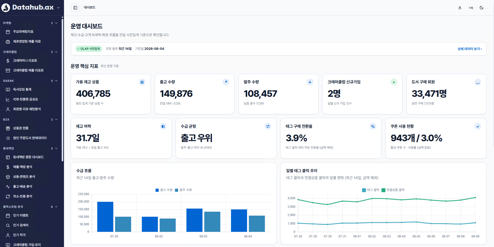

업무의 다음 질문
우리가 말로 묻는 것을,
데이터의 관점으로 바라봅니다.
온라인서점의 일은 매일 새로운 질문에서 시작됩니다.
오늘의 질문
“요즘 어떤 책에
관심이 모이고 있을까?” 상품 · 콘텐츠 · 반응 · 판매
관심이 모이고 있을까?” 상품 · 콘텐츠 · 반응 · 판매
모이고 있을까?
이번 주 콘텐츠메인 노출
대상 도서4권
콘텐츠 상태노출 중
서로 다른 업무에서 바라보는 값
판매 상태 · 재고노출 위치 · 상태기간 · 판매 현황리뷰 · 콘텐츠 반응
상품
콘텐츠
판매
반응
하나의 질문 · 서로 다른 관점
무엇을 알고 싶은지에 따라,
필요한 데이터의 모습도 달라집니다.
상품의 관점판매 상태와 재고판매 중 · 24권 · 입고 예정
콘텐츠의 관점노출과 반응메인 · 노출 중 · 대상 도서 4권
독자 반응의 관점
“문장이 오래 기억에 남았어요.”서로 다른 책과 콘텐츠에 남은 목소리
질문은 하나로 끝나지 않습니다
온라인서점의 하루에는
서로 다른 질문이 이어집니다.
01어떤 콘텐츠에
반응이 모였을까?콘텐츠 운영
반응이 모였을까?콘텐츠 운영
02지금 확인해야 할
상품은 무엇일까?상품 운영
상품은 무엇일까?상품 운영
03어떤 주문이
처리를 기다리고 있을까?주문 운영
처리를 기다리고 있을까?주문 운영
04책을 둘러싼 반응은
어떻게 달라지고 있을까?독자와 콘텐츠
어떻게 달라지고 있을까?독자와 콘텐츠
FROM QUESTION TO VIEW
질문이 달라질 때마다,
먼저 보아야 할 데이터도 달라집니다.
모든 데이터를 한꺼번에 보는 것이 아니라,
지금 필요한 관점에서 탐색합니다.

필요한 데이터를,필요한 관점으로.
DataHub 시작하기 ↗
천천히 스크롤해보세요